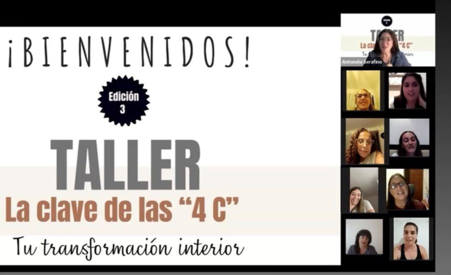
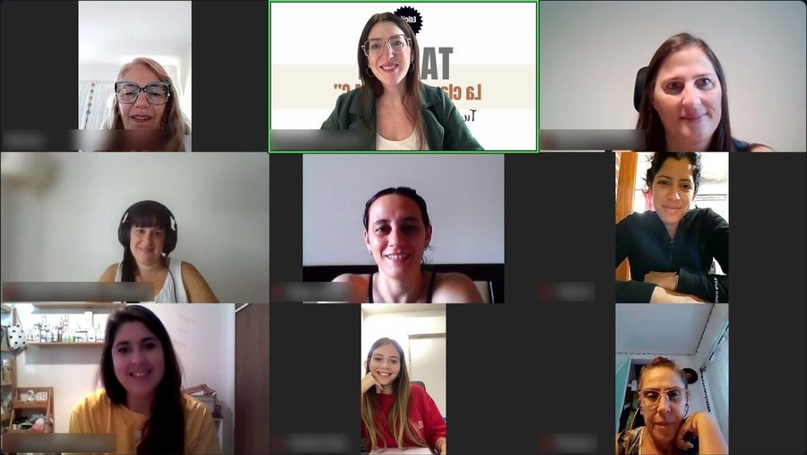
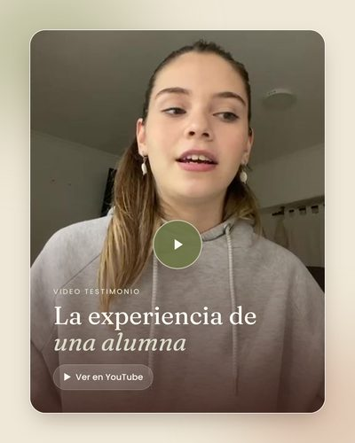

De 1 a 6 cohortes
Diseñé desde cero la Diplomatura en Supervisión, Coaching y Liderazgo de Gestar Educativa y acompañé su expansión de una a seis cohortes.
Portfolio Profesional
Abogada · Coach Ontológica Profesional · Capacitadora · Facilitadora · Diseñadora Instruccional
Diseño y facilito experiencias de formación para desarrollar líderes, fortalecer equipos y acompañar procesos de cambio en empresas e instituciones educativas.
Transformé mi experiencia jurídica en una trayectoria dedicada al desarrollo de personas, integrando coaching, neurociencias, docencia y diseño de experiencias de aprendizaje.
Familias acompañadas en procesos de crianza, comunicación y desarrollo emocional.
Combino docencia, diseño de contenidos y facilitación en carreras, diplomaturas y masterclasses para profesionales de diversas áreas.
Diseñé desde cero la Diplomatura en Supervisión, Coaching y Liderazgo de Gestar Educativa y acompañé su expansión de una a seis cohortes.
Capacitaciones a docentes, directivos y gabinetes en inteligencia emocional, comunicación y vínculos.
Transformo necesidades de capacitación en programas con contenidos, dinámicas y herramientas para aplicar lo aprendido.
Masterclasses sobre liderazgo, motivación y neurociencias aplicadas para AICAD Business School, España.
Creé el Método 4C para conectar la reflexión personal con acciones concretas. Lo organicé en cuatro ejes que se complementan: Consciencia, Comunicación, Constancia y Compromiso.
Reconocer cómo interpretamos lo que nos pasa y qué patrones necesitamos revisar.
Trabajar el diálogo interno y las conversaciones con otros para expresar necesidades y construir acuerdos.
Traducir lo aprendido en pequeñas acciones y hábitos que puedan sostenerse.
Definir decisiones y asumir un papel activo en el cambio que buscamos.
En encuentros grupales que combinan conceptos, preguntas de reflexión, ejercicios y prácticas entre encuentros. Cada participante trabaja sobre una situación propia y construye acciones para llevar lo aprendido a su vida cotidiana.


Delegación, feedback, conversaciones difíciles y coordinación de equipos.
Escucha, pedidos claros, acuerdos, gestión de desacuerdos y colaboración.
Autoconocimiento, autorregulación y recursos para afrontar situaciones de presión.
Aportes de las neurociencias para comprender la atención, la motivación y la construcción de hábitos.
Herramientas para abordar la incertidumbre, facilitar conversaciones y acompañar nuevas formas de trabajo.
Modalidad online y presencial a coordinar.
“Realmente muy agradecida a vos por tu forma de enseñar, transmitir y compartir tus conocimientos, que hicieron que me enamore del coaching. […] Vos marcaste la diferencia como docente.
Lali B. · Egresada de la carrera de coaching
“Cuando el docente se fortalece emocionalmente, el aula cambia. Y cuando el aula cambia, los alumnos aprenden mejor.
Colegio San Carlos, Mercedes · 5.ª Jornada Institucional “Enseñar desde el vínculo”

▶ Video testimonioLa experiencia de una alumnaVer en YouTube →Deslizá para ver más · tocá un mensaje para ampliarlo
Parto de las necesidades de cada organización: objetivos claros, situaciones reales y participación activa.
Combino explicación, reflexión y práctica para que cada participante se lleve recursos para conversar, coordinar, liderar y afrontar cambios.
Colaboro con consultoras en el diseño, la facilitación y el seguimiento de propuestas.
Antonela María Serafino
Tocá en cualquier lugar para cerrar